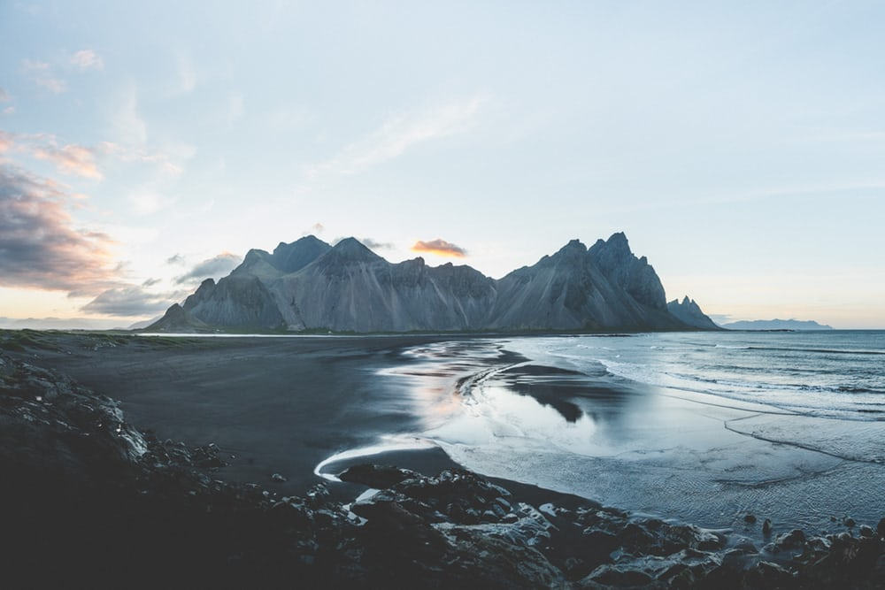

HOME PAGE
--

--
Norway
Norway has a total area of 385,207 square kilometres (148,729 sq mi) and a population of 5,312,300 (as of August 2018). The country shares a long eastern border with Sweden (1,619 km or 1,006 mi long). Norway is bordered by Finland and Russia to the north-east, and the Skagerrak strait to the south, with Denmark on the other side. Norway has an extensive coastline, facing the North Atlantic Ocean and the Barents Sea. The maritime influence also dominates Norway's climate with mild lowland temperatures on the sea coasts, whereas the interior, while colder, is also a lot milder than areas elsewhere in the world on such northerly latitudes. Even during polar night in the north, temperatures above freezing are commonplace on the coastline. The maritime influence brings high rainfall and snowfall to some areas of the country.
Back